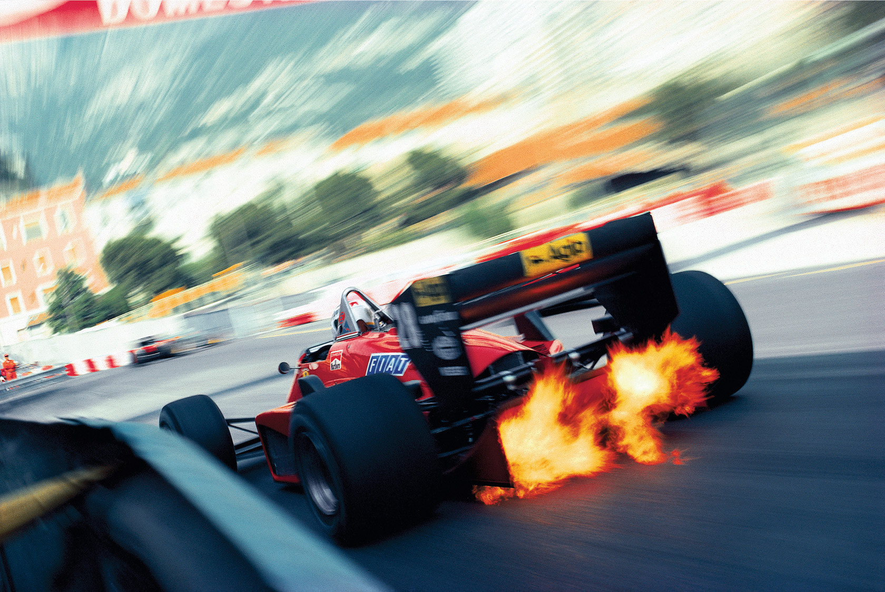
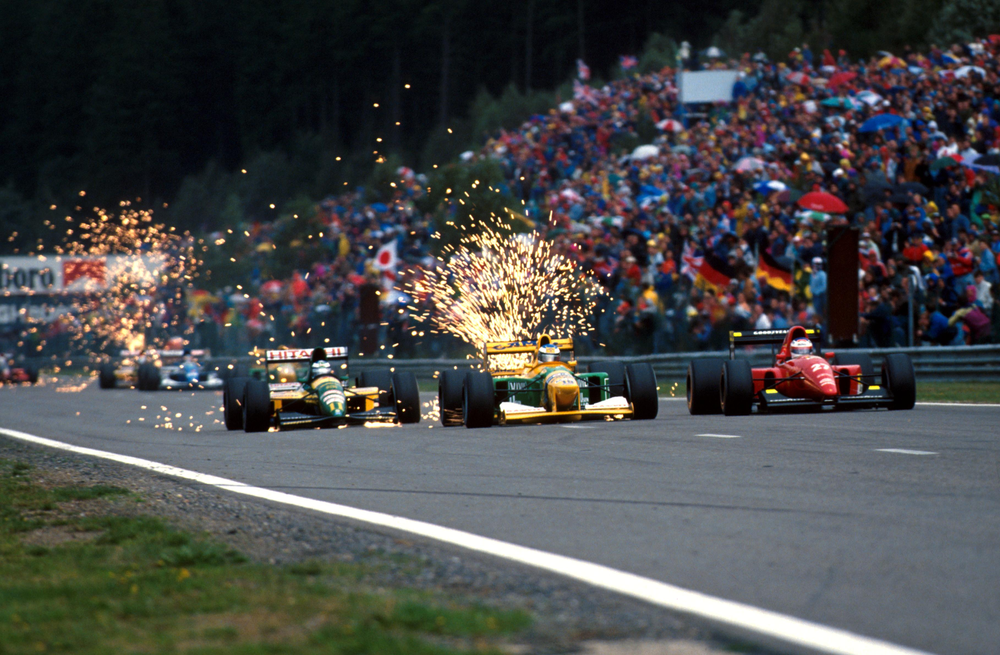
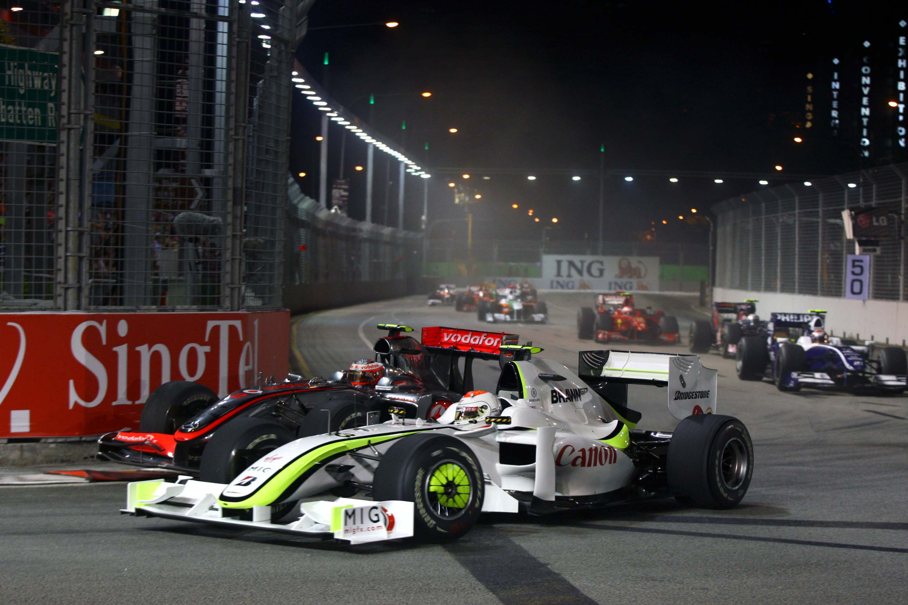
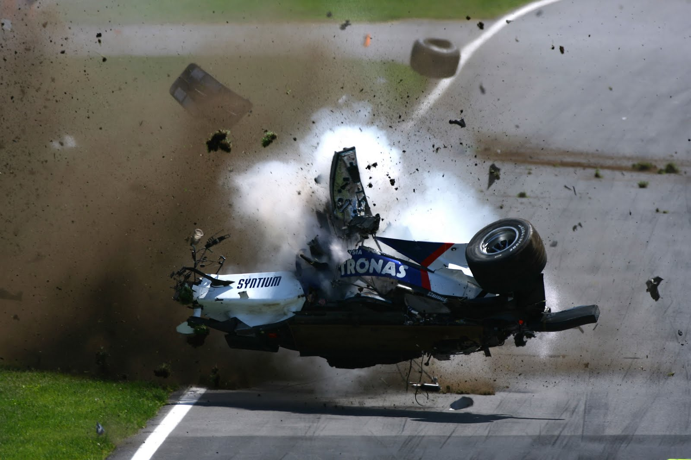
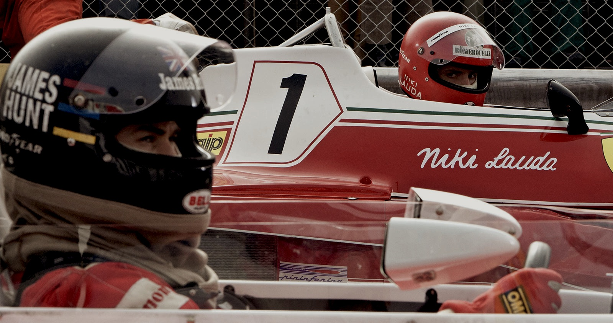
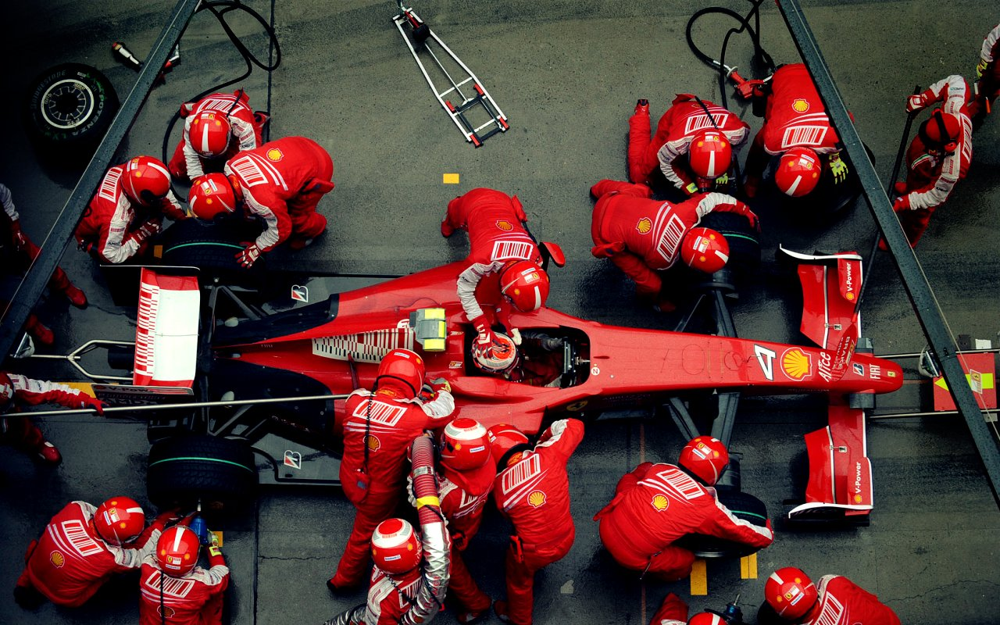
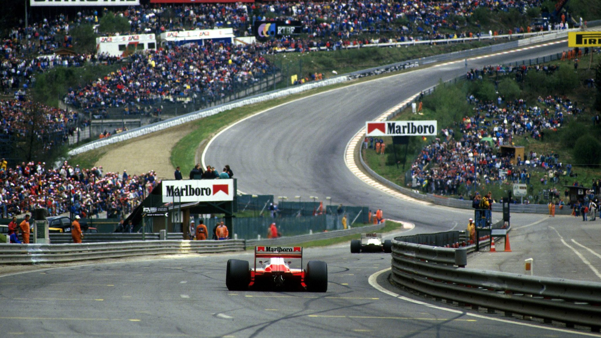
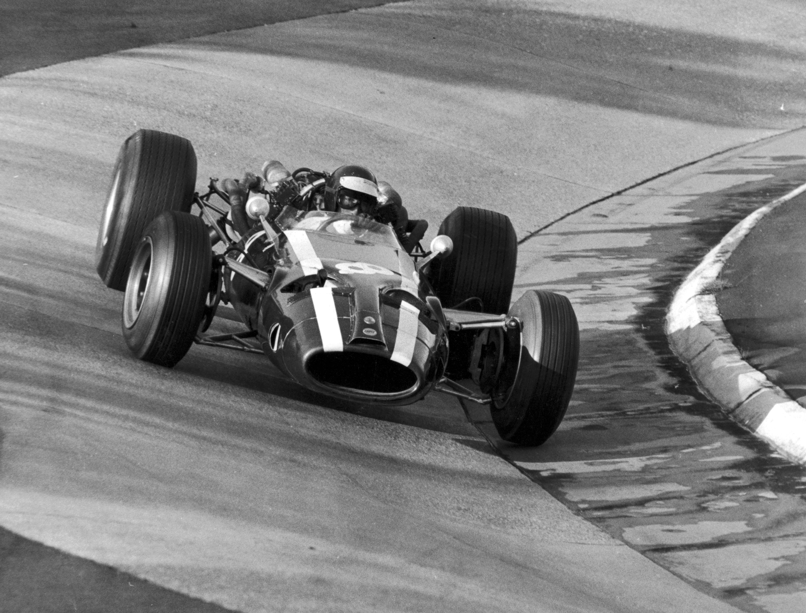
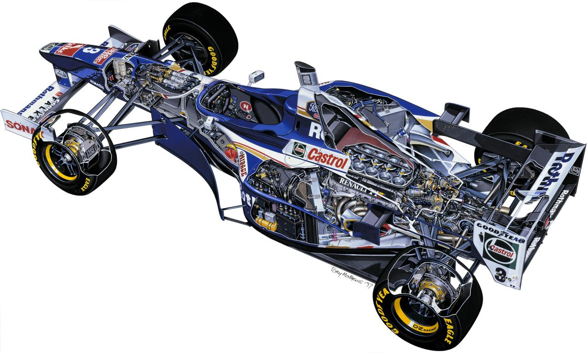
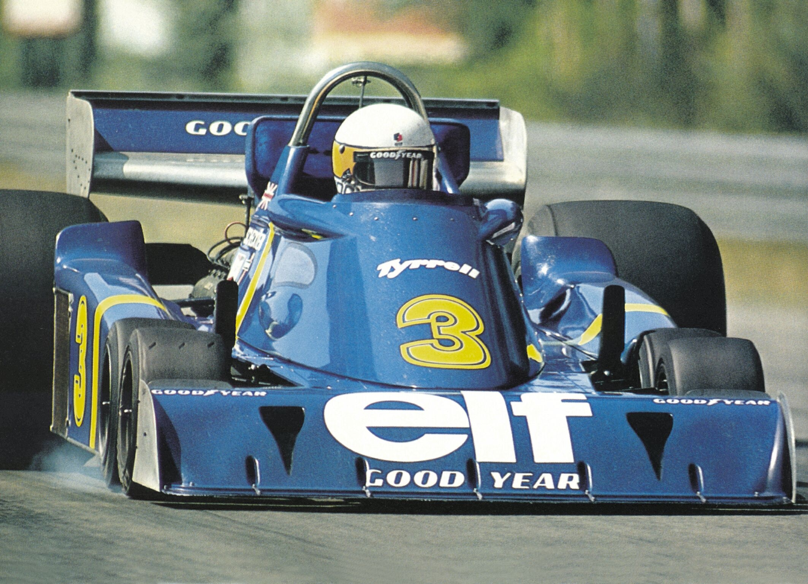

Stefan Johansson, 1985 u Ferrariu juri ulicama Monaca
Na slici s lijeva na desno: Mika Hakkinen, Michael Schumacher, Jean Alesi bok uz bok na stazi Spa-Francoorchamps, 1992.
Debitirao 2009. godine nakon što se Honda povukla 2008. godine; iste te sezone je osvojio oba naslova(vozačko i kontstruktorsko)
Robert Kubica u stravičnom sudaru 2007. u Kanadi iz koje izašao - neozlijeđen
Na slici je James Hunt i Niki Lauda. Najveće rivalstvo '70-ih
Ferrari vježba izvođenje zaustavljanja, VN Kine, 2009. godine
Alain Prost na ravnici prije ulaska u zavoj Eau Rouge
Johan Rindt u bolidu Maseratia tijekom 60-ih
Presjek bolida Formule 1, tima Williams s motorom Renaultovim V10 motorom
Tyrellov bolid i njihov pokušaj bolida sa 6 kotača tijekom kasnih 70-ih